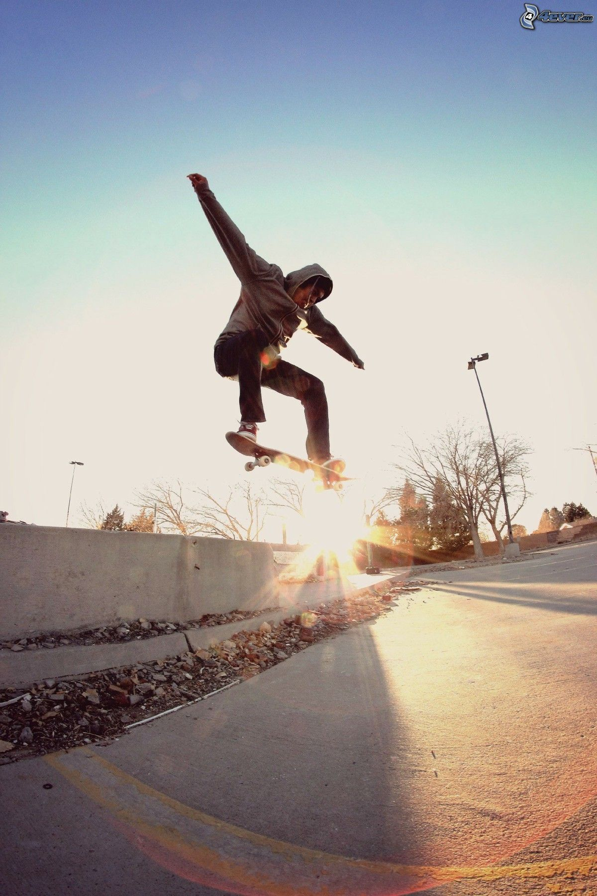

Gördeszka
A gördeszka egy kerekekkel és tengelyekkel felszerelt falap, melyet a fiatalok főként sportolásra használnak. A falapot egy fekete "papír" borítja, amelyet grip tape -nek nevezünk. A gördeszkával számtalan trükk és ennek variációja hozható létre.
A gördeszkázás sport, művészet, életstílus és kultúra. Jellemzően a tinédzserek tevékenysége, de természetesen idősebbek is űzhetik. Ráadásul nem is kell az extrém változatát választanunk ahhoz, hogy élvezhessük az alábbi előnyöket, amelyeket a sportág nyújt művelőinek.
A gördeszkázás előnyei:
- A gördeszkázás növeli a rugalmasságot, hiszen merev izmokkal nem művelhetjük ezt a sportot.
- A teljes testet átmozgatja, hiszen a gördeszkázó nemcsak a lábát használja, hanem a karját és a törzsét is az egyensúlyozáshoz; ráadásul mindet egyszerre.
- A gördeszkázók állóképessége jelentősen megnövekszik.
- A gördeszkával való trükközés kitartásra nevel.
- A gördeszkázás javítja a koordinációt.
- A fiatalok számára jó „tanítómester” a gördeszka: megtanítja őket arra, hogy a tetteiknek következményeik vannak, egy rossz döntést nagy esés követhet, illetve, ha elestünk, talpra kell állnunk, és újra próbálkoznunk.
A gördeszka részei:
- Lap, általában 7 réteg rugalmasabb fából áll össze
- Két felfüggesztés és alatta a műanyag alátét
- Kerekek
- Csapágyak
- Grip tape
Az imént felsorolt alkatrészeket csavarok, anyák tartják össze.
